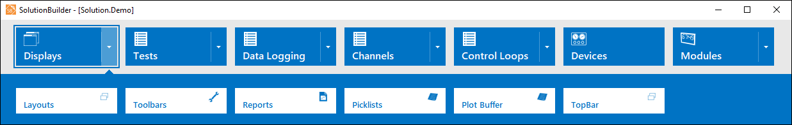

iTest User's Guide
SolutionBuilder enables you to configure and perform edits to AutomationPanel's interface in an offline environment. You can customize various display features as detailed in this document. Each display feature has its own editor which you can access by selecting the Displays > Editor type in the main menu. The following sections describe each editor and how to use them to customize AutomationPanel's interface.
Displays Menu

Layouts are containers that you can use to add panels and configure the design of AutomationPanel's interface. You can use the Layouts editor to add panels and arrange them specific to the needs of your testing environment. After you have designed the layout, you can modify panel and sub-object properties using the properties bar. For more information, refer to the Managing Layouts documentation.
Toolbars provide quick access to functions and information. They can be used to display buttons to perform actions, launch applications, or control schedules, and they can also be used to display indicators for viewing channel information. In AutomationPanel, toolbars function as docked panels or layouts, and they remain visible regardless of which layout is active. For more information, refer to the Managing Toolbars documentation.
The Reports editor allows you to create web report templates which, when coupled with LabAgent, provides a tool for visualizing information in data files. For more information, refer to the Managing Reports documentation.
A picklist is a file that contains a list of values or strings that can be used to populate drop-down fields in display objects such as AutomationPanel's Tile Panel. Picklist values can also be paired with mailslot messages which enables you to send a message or perform an action when an option is selected. For more information, refer to the Managing Picklists documentation.
The Plot Buffer editor is used to manage channels for the high-speed circular buffer. The buffer can be configured and selected as a data source in a Chart panel, enabling high rate data to be viewed. For more information, refer to the Plot Buffer documentation.
The TopBar editor is used to configure the items that display in AutomationPanel's TopBar. For more information, refer to the Managing the TopBar documentation.